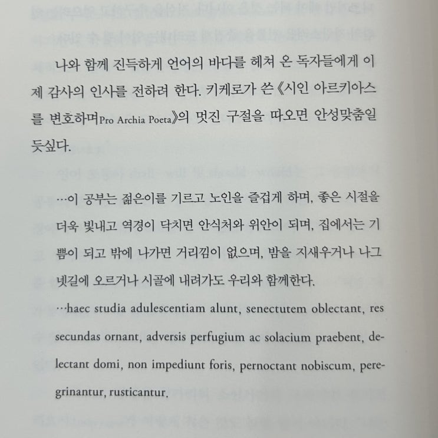

얼마전 블로그 이웃의 추천으로 읽게 된 책입니다.
마침 외국에 가서 일할 기회가 생겼기 때문에 딱 좋은 타이밍에 좋은 책을 얻게 되었습니다.
이 책을 쓴 저자는 '롬브 커토' 라는 2003년에 돌아가신 1세대 동시 통역사 할머니이십니다. 헝가리 분이신데, 헝가리도한국어와 마찬가지로 주변 가까운 나라와 언어적 유사성이 적은 언어여서 (중국어와 영어는 한국어와 달라도 너무 다름...
ㄷㄷ 일본어는 그나마 좀 비슷한 듯) 다른 언어를 배우기가 쉽지 않으셨을 텐데 무려 '독학을 통해' 16개 언어를 하실 수있는 분이십니다.
와 독하다 독해 그 16개라는 것도 이탈리아어 영어 독일어 프랑스어 하면서 4개 국어 한다는... 그런거 아니고 정말 세계 곳곳의 언어를 하십니다. 솔직히 영어 이탈리아어 독일어 프랑스어 하면서 4개 국어 한다고 하면 쪼금 스스로 부끄러워야 할 필요가 있지 요? ㅋㅋ
하실 수 있는 언어를 보면 영어, 프랑스어, 독일어, 러시아어, 이탈리아어, 스페인어, 일본어, 중국어, 폴란드어 등등 등 으로 상당히 다른 언어들을 함께 구사하시는 것을 알 수 있습니다. 예전부터 일본어 통역사로 일하시면서 꽤 일본어를 잘 하실 수 있으셨으니 한국어도 조금만 배우셨으면 금방 하셨을 듯합니다.
한가지 우리기 이 책을 읽으며 기억해야 할 사안은, 이 책의 초판은 1970년에 나왔다는 사실입니다. 따라서 외국어 교육의 방식이나 쓸 수 있는 수단이 지금과는 상당히 다르다는 것을 이해하고 나서 책을 읽어야합니다.
예를 들어 커토 할머니께서는 소설을 한 권 지정한 후 이 책을 읽거가면서 공부하여 문법과 상용 단어를 익히는 방식을 이야기 하시는데, 실질적으로 당시에 얻을 수 있는 교육 자료가 이런 것 외에는 없었다는 사실을 이해해야합니다. 심지어 이러한 이유로 라디오나 TV를 통해서 해당 목표 언어의 화자가 이야기하는 것을 듣는 것이 아주아주 좋은 기회라고 하실 정도입니다. 물론 너튜브와 인공지능 시대를 살고 있는 우리에게는 뭔 뚱딴지 같은 소리냐고 할 수 있죠 (10년생 : 라디오가 뭐에요? 라디오가 뭐에요?).
하지만 중요한 것은 커토 할머니께서 이야기하시는 이런 교육에 사용하는 자료나 방식이 아닙니다. 교육 방식과 재료는 늘시간이 흐르면서 변하기 마련입니다. 정작 제가 이 책에서 중요하고 가치있다고 생각하는 것은 새로운 언어를 배우는 언어 학습자로서의 마음가짐입니다.
이 책의 원제목이 "How I Learn Languages" 라는 것을 잊지 말아야합니다. 이 제목대로 커토 할머니는 자신이 어떤 과정을 통해서 언어를 배워왔는지에 대해서 책 한 권에 걸쳐서 담담히 이야기해 나가는데 요약하자면 팔할이 바람... 은 아니고 팔할이 호기심이라는 것입니다.
새로운 언어에 대한 호기심을 통해서, 사람들과 교류하면서 즐거움을 느끼고 (그리고 밥벌이도 하고) 불완전함을 두려워 하지 않고 꾸준히 자신의 실수를 고쳐가면서 발전하는 모습은 모든 언어학습자의 귀감이 될 만합니다.
그래서 그런지 많은 챕터의 내용 중 하나가 본인이 지금까지 언어를 배우면서 실수했던 이야기입니다 ㅎㅎ
내가 보아도 얼굴이 좀 빨개져 하지만 성격이 적극적이었던 카토 할머니는 '실수를 해서 부끄러울 수록, 기억엔 더 잘 남는다, 그렇게 평생 남을 기억들을 얻어왔다' 라고 재미있게 넘깁니다.
아래는 책을 읽으면서 좋았던 구문들을 정리한 내용과 제 생각들입니다.
곧장 이해하지 못하는 내용은 무시하라. 어떤 단어가 중요 하다면 여러 번 다시 나오고 결국에는 스스로를 설명할 것이다.
읽어가는 과정에서 모르는 게 아니라 아는 것에 기초를 두어라.
더 많이 읽을수록 책의 빈칸에 더 많은 구절을 적게 될 것이다.
여러분과 여러분이 얻은 지식 사이의 관계는 기계적으로 사전 을 찾아가며 읽을 때보다 훨씬 더 깊어질 것이다.
성취감은 감성적이고 정서적인 감동을 제공할 것이다. 여러분은 자물쇠를 열었다. 작은 퍼즐을 풀어낸 것이다.
p79 생각 : 많은 언어학습자들이 바로바로 단어를 찾는 나쁜 습관이 있는데, 이런 경우에 뜻이야 빨리 이해하지만 머릿속에 그 단어를 기억하는 회로가 생겨나질 않는다. 우리의 기억 회로는 오랜 추론이나 궁금증이나 맥락을 통해서만 단단해진다. 이 과정을 괴롭다고 넘기면 사전 없이는 아무것도 못 보는 사람이 되는 것이다.
독서를 통해서 호기심이 채워질수록 교착 상태를 뚫고 나갈 단련법을 갈고닦을 필요는 없어진다.
우리는 한 번 넘어졌다고 자전거를 벽에 기대어 세워두지 않고, 눈밭 위에서 한 번 넘어졌다고 스키를 부러뜨리 지 않는 다. 비록 고통스러운 멍 때문에 그 기억이 오랫동안 남아 있겠지만 말이다. 이러한 고난이 점점 줄어들고 새로 익히는 기술이 주는 즐거움은 점점 더 커질 것을 알기 때문에 계속 해나가는 것이다. 비록 그것이 힘을 주어야 문이 열리는, 그런 새로운 세상과는 전혀 관계가 없다고 해도 말이다.
p93 생각 : 이것은 언어 뿐만 아니라 세사 모든 일에 적용된다. 실수나 실패 없이 성장과 성공은 없는 것이다. 하지만 사람들은 점점 인내심이 매마르고 빠르고 쉬운 길만 찾게 된다. 그래서 사람들이 언어 비법을 가르쳐 준다는 학원이나 영리치 될 수 있게 만들어 준다는 인터넷 페이크 구루의 희생양이 되는 것이다.
좋은 발음을 익히려면 듣기만 해도 된다는 망상도 있다. 하지만 텔레비전에서 피겨 스케이트 세계 챔피언들을 열심히 보 면 이튿날 아이스링크에서 트리플 루프나 더블 악셀을 해낼 수 있으리라 생각하는 편이 차라리 나을 것이다.
p107 생각 : 개인적으로 많이 들어서 귀가 뚫렸다는 표현은 거짓말이라고 생각한다. 사람은 말 할 수 있는 만큼만 들린다. 이것은 나도 2개 외국어를 사용할 수 있게 되면서 알게된 사실이다. 듣는 것은 필요하지만 듣는다고만 해서 절대 실력이 좋아지지 않는 데, 우리 할머니가 또 뼈를 부수시네 ㅎㅎ
교육학적인 관점에서 볼 때 가장 가치 있는 실수는 자기가 직접 저지른 것이다. 오류를 저질렀다는 것을 스스로 알게 되거 나 실수를 해서 비난을 받으면 뇌의 정서적 영역에서 궁금증, 짜증, 공격성이 일어난다. 이런 모든 것이 지식을 확실히 단단 하게 만든다.
그러니 이제 실수에 화를 내지 말자.
생각 : 많은 학습자들이 자신의 실수를 못 견디고 (특히 실제로는 똑똑하지 않지만 본인이 똑똑하다고 생각하는 학습자들이) 학습을 포기한다. 이 마인드셋을 바꾸지 않으면 학습과 성장은 어렵다.
마지막으로 이 책에서 가장 좋았던, 저자의 마침말을 올리고 본 독후감을 마무리 하고자합니다.
언어 공부를 좋아하시는 분들이라면 분명 이해하실 내용입니다.

이 공부는 젊은이를 기르고 노인을 즐겁게 하며, 좋은 시절을 더욱 빛내고 역경이 닥치면 안식처와 위안이 되며, 집에서는 기쁨이 되고 밖에 나가면 거리낌이 없으며, 밤을 지새우거나 나그넷길에 오르거나 시골에 내려가도 우리와 함께한다.
끝.